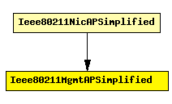

File: NetworkInterfaces/Ieee80211/Mgmt/Ieee80211MgmtAPSimplified.ned
C++ definition: click here
Used in 802.11 infrastructure mode: handles management frames for an access point (AP). It relies on a connected Ieee80211Mac for actual reception and transmission of frames.
This management module variant does not implement beacons, probes, authentication and association -- it simply treats all stations as associated all the time. This also means that you cannot use this module in a simulation that involves handovers; for that you need to use the full version, Ieee80211MgmtAP.
When simulating an AP that has other (Ethernet or wireless) interfaces as well, this module can be connected to a MACRelayUnit which performs bridging of Ethernet frames. This module will perform conversion from/to EtherFrame for MACRelayUnit.
This module never switches channels, that is, it will operate on the channel the physical layer is configured for (see channelNumber in Ieee80211Radio).
Author: Andras Varga
The following diagram shows usage relationships between modules, networks and channels. Unresolved module (and channel) types are missing from the diagram. Click here to see the full picture.
If a module type shows up more than once, that means it has been defined in more than one NED file.
| Ieee80211NicAPSimplified | This NIC implements an infrastructure mode 802.11 network interface card for a wireless Access Point (AP), but using a simplified mgmt module that does not support handovers. |
| Name | Type | Description |
|---|---|---|
| frameCapacity | numeric |
| Name | Direction | Description |
|---|---|---|
| uppergateIn | input | from MACRelayUnit; can be left unconnected |
| uppergateOut | output | to MACRelayUnit; can be left unconnected |
| macIn | input | from Ieee80211Mac |
| macOut | output | to Ieee80211Mac |
simple Ieee80211MgmtAPSimplified parameters: frameCapacity: numeric; gates: in: uppergateIn; // from MACRelayUnit; can be left unconnected out: uppergateOut; // to MACRelayUnit; can be left unconnected in: macIn; // from Ieee80211Mac out: macOut; // to Ieee80211Mac endsimple